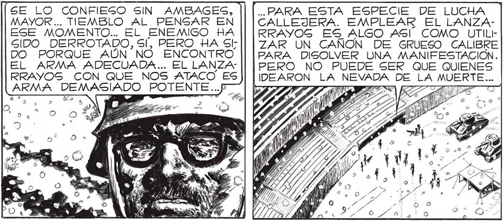
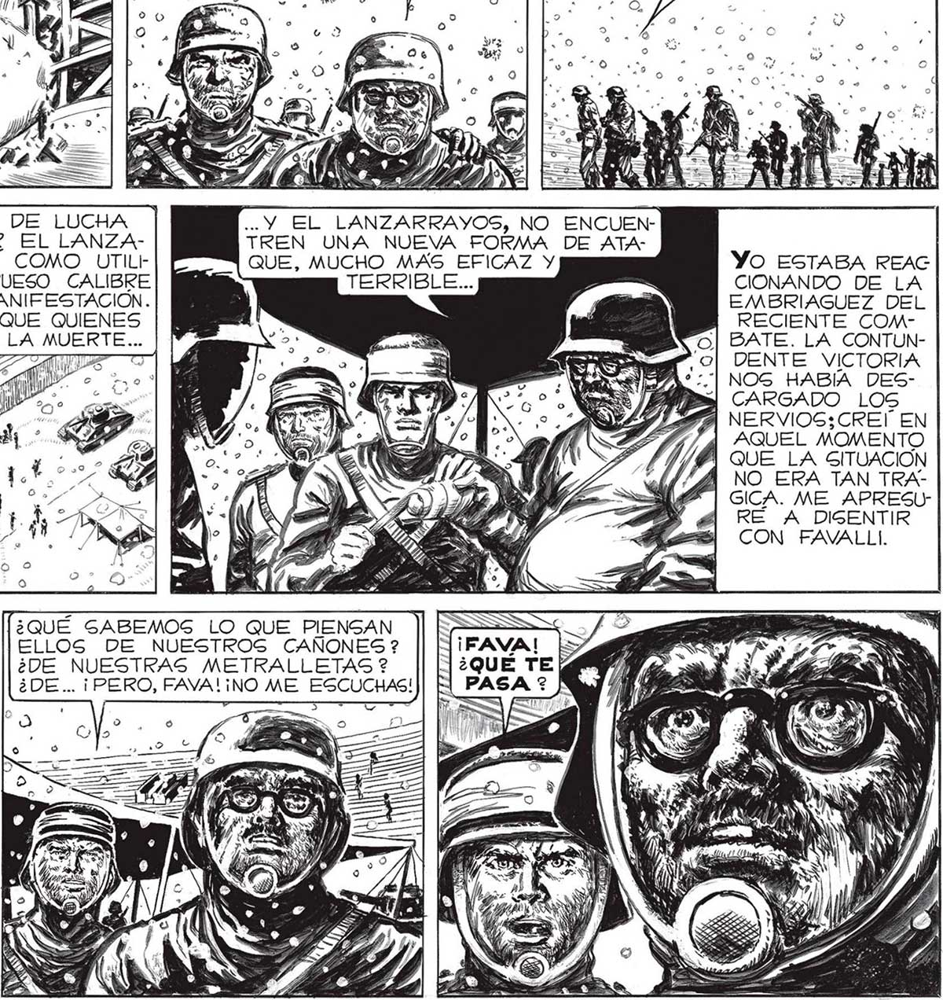

SE ESTA QUEMANDO. SOLO QUE ES UNA FORMA DE COMBUSTION NUEVA... SIN LLAMA, Y CON GRAN DESGARROLLO DE CALOR... SEGURO QUE ES UN DIGPOSITIVO AUTOMATICO... o) SE LO CONFIESO SIN AMBAGES, MAYOR... TIEMBLO AL PENSAR EN ESE MOMENTO... EL ENEMIGO HA SIDO DERROTADO, Sl, PERO HA Sl; DO PORQUE AÚN NO ENCONTRO EL ARMA ADECUADA... EL LANZA RRAYOS CON QUE NOS ATACO ES ARMA DEMASIADO POTENTE...” y e] .. PARA EVITAR QUE EL APARATO CAIGA EN MANOS DEL ENEMIGO.. SE PUSO EN MARCHA CUANDO YO QUISE ABRIR LA ESCOTILLA DE UNA MANERA, SIN DUDA, DISTINTA A LA QUE ELLOS ACOSTUMBRAN. .. PARA ESTA ESPECIE DE LUCHA CALLEJERA. EMPLEAR EL LANZARRAYOG ES ALGO ASI COMO UTILtZAR UN CANON DE GRUESO CALIBRE PARA DISOLVER UNA MANIFESTACION. PERO NO PUEDE SER QUE QUIENES IDEARON LA NEVADA DE LA MUERTE... Y O ÍA ! > << FP 77 A Ñ of, NO_ HAGAS TANTO EL PAJARO DE MAL! AGUERO, FAVA..¿POR QUE NO PENGAR MEJOR, QUE EL ENEMIGO YA LANZO CONTRA NOSOTROS TODO LO QUE TENIA? ¡ESA ESPECIE DE PLATO VOLADOR FUE, QUIZA, SU ÚLTIMO ZARPAZO ! “TONTO, DESDICHADO DE MI... ¿COMO PUDE DECIR, AQUELLO ? ¿COMO NO ADIVINÉ QUE EL ENEMIGO OCUL TABA AÚN LA MAS ATROZ, LA MAS INESPERADA DE LAS ARMAS ?¿COMO NO ENTREVI” QUE, MIENTRAS YO HABLABA, YA LLEGABA EL GOLPE MAS TERRIBLE DE CUANTOS SUFRIERAMOS? VOLVAMOS DENTRO. DESPUES DE TODO, RESULTA EVIDENTE QUE EL ENEMIGO NO ES INVENCIBLE, ¡ESTA ES LA TERCERA VEZ QUE LOS DERROTAMOS: ' O TANTO (OPTIMISMO, MAYOR... .. Y EL LANZARRAYOS, NO TREN UNA NUEVA FORMA QUE, MUCHO MAS EFICAZ Y TERRIBLE... ¿QUE SABEMOS LO QUE PIENSAN ELLOS DE NUESTROS CANONES ? ¿DE NUESTRAS METRALLETAS ? ¿DE... ¡ PERO, FAVA!L ¡NO ME ESCUCHAS! TAMBIÉN LOS INDIOS DE AMÉRICA TUVIERON ÉXITOS PARCIALES CONTRA_LOG CONQUISTADORES ESPAÑOLES.. NO SE OLVIDE QUE LOS CASCARUDOS NO SON LOS VERDADEROS ENEMIGOS... TODAVIA NO HEMOS TENIDO OCASION DE ENFRENTAR A NINGUNO... ENCUENDE ATAYO ESTABA REAC CIONANDO DE LA EMBRIAGUEZ DEL RECIENTE COMBATE. LA CONTUNDENTE VICTORIA NOS HABIA DES¡y CARGADO LOS Í NERVIOS:CREIÍ EN j AQUEL MOMENTO QUE LA SITUACION A NO ERA TAN TRAGICA. ME APRESUIl RE A DISENTIR CON FAVALLI. 119

